⋅
⋅ = 0 si y sólo si
son ortogonales
= 0 si y sólo si
son ortogonales
Demostrar que con dos vectores distintos de cero, se cumple que ⋅ = 0 si y sólo si
son ortogonales
⇒ Si  ⋅
⋅ = 0, entonces
= 0, entonces  ⋅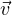 = ∥
⋅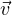 = ∥ ∥∥
∥∥ ∥cosθ = 0, como los vectores son distintos
de cero ∥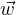∥∥
∥cosθ = 0, como los vectores son distintos
de cero ∥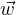∥∥ ∥≠0, entonces cosθ = 0, y θ = π∕2 \B1 nπ, n ∈ ℤ (incluye \E1\B4angulos
negativos), que corresponde a los \E1\B4angulos que indican la ortogonalidad de los
vectores.
∥≠0, entonces cosθ = 0, y θ = π∕2 \B1 nπ, n ∈ ℤ (incluye \E1\B4angulos
negativos), que corresponde a los \E1\B4angulos que indican la ortogonalidad de los
vectores.
⇐ Si son ortogonales el \E1\B4angulo comprendido entre los vectores es θ = π∕2 \B1 nπ,
n ∈ ℤ, entonces  ⋅
⋅ = ∥
= ∥ ∥∥
∥∥ ∥cos(π∕2 \B1 nπ) = 0
∥cos(π∕2 \B1 nπ) = 0
i) Sean  = (1,0,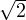) y
= (1,0,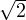) y  = (-2,1,
= (-2,1, ), entonces
), entonces  y
y  son ortogonales pues
son ortogonales pues
 ⋅
⋅ = -2 + 0 + 2 = 0.
= -2 + 0 + 2 = 0.
ii) Sean  = (1,0,) y
= (1,0,) y  = (-2,1,1) entonces el \E1\B4angulo entre 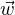 y
= (-2,1,1) entonces el \E1\B4angulo entre 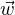 y  es
es
Entonces es necesario calcular  ⋅
⋅ = -2 + 0 + 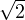, y ∥w∥ = 1 + 2 = 3, as\ED\B4 como
∥v∥ = 4 + 1 + 1 = 6, entonces
= -2 + 0 + 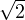, y ∥w∥ = 1 + 2 = 3, as\ED\B4 como
∥v∥ = 4 + 1 + 1 = 6, entonces
iii) Sean  = (1,-1,0) y
= (1,-1,0) y  = (1,1,0). Consideremos el problema de encontrar un
vector
= (1,1,0). Consideremos el problema de encontrar un
vector  ∈ ℝ3 que cumpla con las tres condiciones siguientes
∈ ℝ3 que cumpla con las tres condiciones siguientes
Para resolver el problema, supongamos que 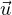 = (x,y,z), entonces tenemos que
En consecuencia
x = 2 cos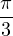 ,
cos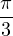 ,
y = 2 cos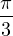 ,
y
cos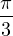 ,
y
|
| (1) |
Por lo que
1.-  ⋅ (
⋅ ( ×
× ) = 0. Como el vector
) = 0. Como el vector  ×
× es perpendicular a
es perpendicular a  , entonces el producto
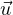 ⋅ (
, entonces el producto
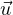 ⋅ ( ×
× ) es cero.
) es cero.
2.-  ⋅ (
⋅ ( ×
× ) = 0. Como el vector
) = 0. Como el vector  ×
× es perpendicular a
es perpendicular a  , entonces el producto
, entonces el producto
 ⋅ ( ×
⋅ ( × ) es cero.
) es cero.
3.- ∥ ×
× ∥2 = ∥
∥2 = ∥ ∥2∥∥2 - (
∥2∥∥2 - ( ⋅
⋅ )2. Desarrollamos el lado derecho
)2. Desarrollamos el lado derecho
 | (2) |
7.- α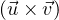 = (α ) ×
) × =
=  × (α
× (α )
)
Desarrollamos el lado izquierdo
|
| (3) |
9.-  ×
× = 0.
= 0.
 ×
× = ∥
= ∥ ∥∥
∥∥ ∥sin0 = 0, pues es el vector
∥sin0 = 0, pues es el vector  es paralelo consigo mismo.
es paralelo consigo mismo.